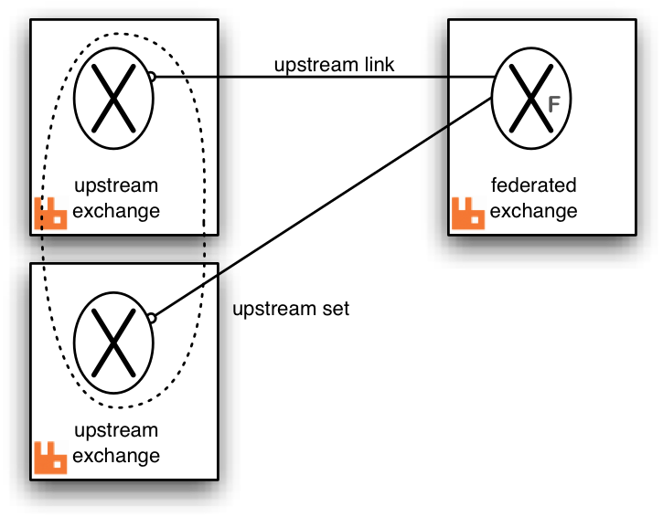
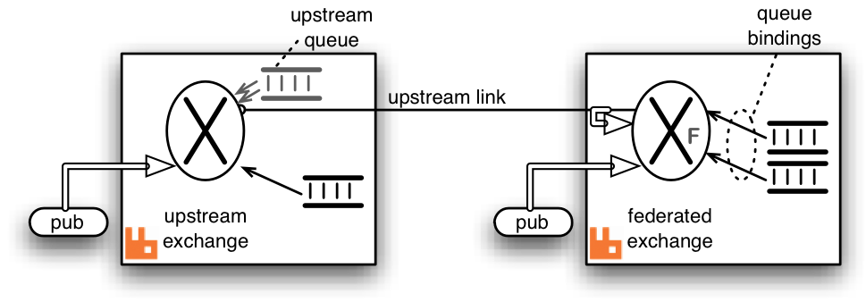
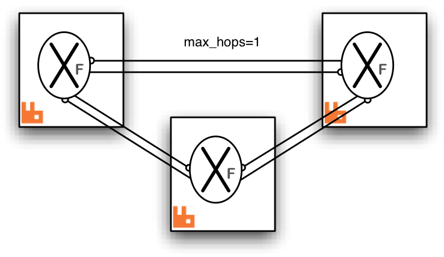
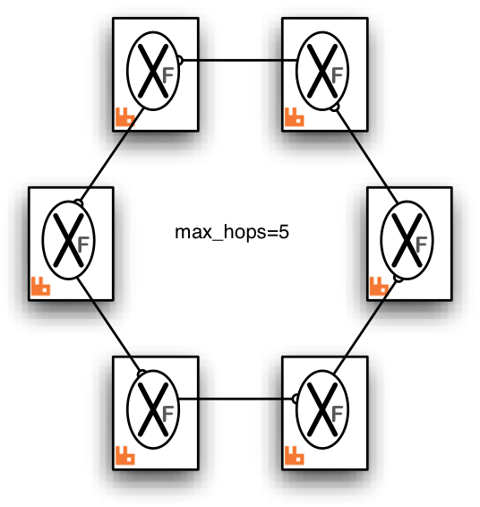

Federated Exchanges
- What does a federated exchange do?
-
A federated exchange links to other exchanges (called upstream exchanges). Logically (see next item), messages published to the upstream exchanges are copied to the federated exchange, as though they were published directly to it. The upstream exchanges do not need to be reconfigured and they do not have to be on the same broker or in the same cluster.
Here is a diagram showing a single federated exchange in one broker linking to a set of two upstream exchanges in other brokers.
All of the configuration needed to establish the upstream links and the federated exchange is in the broker with the federated exchange.
- Are all messages copied?
-
Only those messages that need to be copied are propagated. This is an optimisation arranged dynamically by the federation plugin. (See below.)
- How does a federated exchange link to its upstream exchanges?
-
The federated exchange will connect to all its upstream exchanges using AMQP. When declaring or configuring the federated exchange each upstream exchange is listed with the connection properties to be used to establish the link.
- Can I federate a federated exchange?
-
There is nothing to prevent a federated exchange being 'upstream' from another federated exchange. One can even form 'loops', for example, exchange A declares exchange B to be upstream from it, and exchange B declares exchange A to be upstream from it. More complex multiply-connected arrangements are allowed.
To prevent messages being continually copied and re-routed (in a never-ending cycle) there is a limit placed on the number of times a message can be copied over a link (see max-hops below). It is recommended that all the exchanges linked by federation are of the same type. Mixing types will lead to strange routing behaviour.
- Can I federate any exchange?
-
Nearly. You can't federate the default exchange (named ''), since that is really just a way to directly address queues. You also can't federate exchanges that are marked as internal (since exchanges federate messages that are published directly to them, and you can't publish directly to an internal exchange).
- What are typical uses for federated exchanges?
-
One typical use would be to have the same "logical" exchange distributed over many brokers. Each broker would declare a federated exchange with all the other federated exchanges upstream. (The links would form a complete bi-directional graph on n exchanges.)
Another use would be to implement massive fanout - a single "root" exchange in one broker (which need not be federated) can be declared as upstream by many other federated exchanges in other brokers. In turn, each of these can be upstream for many more exchanges, and so on.
See the example diagrams below for some possible arrangements.
Implementation
Inter-broker communication is implemented using AMQP (optionally secured with SSL). Bindings are grouped together and bind / unbind commands are sent to the upstream exchange. Therefore the federated exchange only receives messages for which it has a subscription. The bindings are sent upstream asynchronously - so the effect of adding or removing a binding is only guaranteed to be seen eventually.
The messages are buffered in a queue created in the upstream exchange's broker. This is called the upstream queue. It is the upstream queue which is bound to the upstream exchange with the grouped bindings. It is possible to tailor some of the properties of this queue in the upstream configuration.
Here is a detailed diagram showing a single federated exchange linking to a single upstream exchange including the upstream queue and bindings created by the federation plugin shown in grey. The fat arrow on the upstream link indicates messages republished by the federated exchange. Some potential publisher clients are shown publishing to both exchanges.
Publications to either exchange may be received by queues bound to the federated exchange, but publications directly to the federated exchange cannot be received by queues bound to the upstream exchange.
Example topologies
We illustrate some example federation topologies. Where RabbitMQ
brokers are shown in these diagrams (indicated by a  ) it is possible
to have a cluster of brokers instead.
) it is possible
to have a cluster of brokers instead.
- Pair of federated exchanges
-
Each exchange links to the other in this symmetric arrangement. A publisher and consumer connected to each broker are illustrated. Both consumers can receive messages published by either publisher.

Both links are declared with max-hops=1 so that messages are copied only once, otherwise the consumers will see multiple copies of the same message (up to the max-hops limit).
- Small complete graph
-
This arrangement is the analogue of the pair of federated exchanges but for three exchanges. Each exchange links to both the others.
Again max-hops=1 because the "hop distance" to any other exchange is exactly one. This will be the case in any complete graph of federated exchanges.
- Fan-out
-
One master exchange (which it is not necessary to federate) is linked to by a tree of exchanges, which can extend to any depth. In this case messages published to the master exchange can be received by any consumer connected to any broker in the tree.

Because there are no loops it is not as crucial to get the max-hops value right, but it must be at least as large as the longest connecting path. For a tree this is the number of levels minus one.
- Ring
-
In this ring of six brokers each federated exchange links to just one other in the ring. The "max-hops" property is set to 5 so that every exchange in the ring sees the message exactly once.
This topology, though relatively cheap in queues and connections, is rather fragile compared to a completely connected graph. One broker (or connection) failure breaks the ring.

Copyright © 2007-Present Pivotal Software, Inc. All rights reserved. Terms of Use, Privacy and Trademark Guidelines